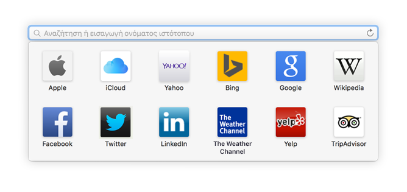
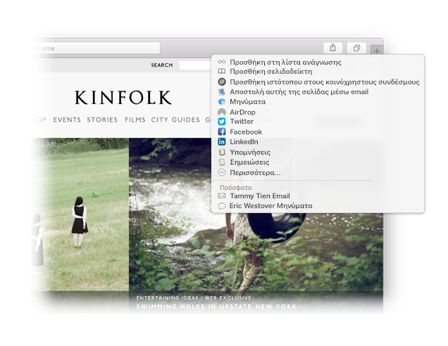

Βρείτε ένα αγαπημένο.
Κάντε κλικ στο πεδίο «Έξυπνη αναζήτηση» για πρόσβαση στους αγαπημένους σας ιστότοπους. Κάντε κλικ σε έναν ιστότοπο για μετάβαση σε αυτόν.

Καρφιτσώστε έναν ιστότοπο.
Σύρετε μια καρτέλα στα αριστερά για να καρφιτσώσετε έναν ιστότοπο, θα παραμείνει στη γραμμή καρτελών.

Μοιραστείτε έναν σύνδεσμο.
Κάντε κλικ στο  για να στείλετε έναν σύνδεσμο μέσω email ή γραπτού μηνύματος, να τον μοιραστείτε στο Facebook ή το Twitter, ή να τον προσθέσετε στις Σημειώσεις.
για να στείλετε έναν σύνδεσμο μέσω email ή γραπτού μηνύματος, να τον μοιραστείτε στο Facebook ή το Twitter, ή να τον προσθέσετε στις Σημειώσεις.